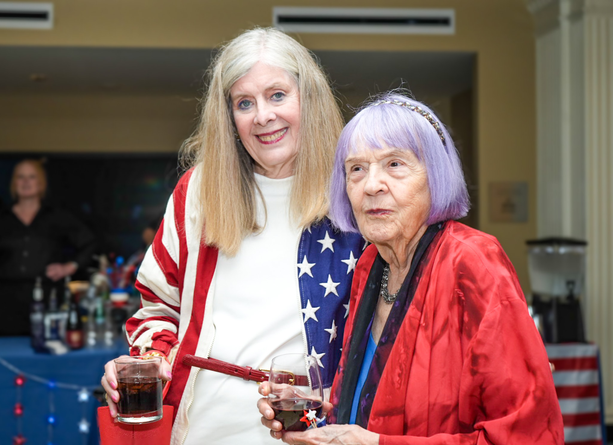

Juneteenth at the Chicago History Museum featured an extraordinary celebration of the signing of the Declaration of Independence. Hosted by the Guild, several hundred guests donned their best red, white, and blue attire to hear Sarah Botstein—executive producer with Ken Burns of The American Revolution series and Geoffrey Baer—Chicago’s famous television maestro of WTTW produced PBS programs. The engaging discussion was preceded by a VIP reception and followed by a festive all-American dinner at the Museum.

“It was a wonderful celebration and a phenomenal program,” noted Connie Barkley, co-chair of the event with Erica Meyer. The duo, veteran Guild organizers who know nearly everyone in the Chicago arena, worked 10 months with an event committee perfecting a flawless shindig. “People really had a great time and seemed to thoroughly enjoy the event–and were inspired to get more involved with the Guild and the Chicago History Museum.”


“Our roaring success was due to Connie, who is absolutely amazing,” said Meyer, who was also instrumental in organizing the event.


Barkley secured Botstein by using the good offices of the Chicago History Museum because The American Revolution series–one of the best PBS programs ever produced–used extensive archives at the Chicago History Museum in their 10-year research to create the incredible series. Ken Burns, Sarah Bernstein, and David Schmidt worked to perfect the magnificent series watched by more than 20 million viewers. If you haven’t seen it, check it out here.
Attendee Brian Hand was moved by the presentation. “The conversation with Sarah Botstein and Geoffrey Baer was exceptional—thought-provoking, entertaining, and deeply informative. The Guild organized an unforgettable evening that reflected the very best of what the Chicago History Museum offers.”


The event was catered by Paramount Events, who went the extra mile to provide an American Revolutionary menu featuring Continental cocktails, cheddar biscuits, corn bread ‘Lafayettes,’ asparagus salad, flat iron steak, cauliflower, beets, farm egg, chard, and summer squash. Dessert featured 26 cherry and blueberry pies donated by Hoosier Mama Pie Company.

“A Celebration of Liberty raised a record amount of financial support by a longshot” noted Eva Rachau, director of Development at the Museum. “People were inspired to donate to such a great cause.” Funds support the tremendously updated permanent exhibit at the Museum called Facing Freedom that has and will continue to attract thousands of visitors.


The Juneteenth program raised funds towards the Guild’s $250,000 pledge for Facing Freedom. The exhibit features a copy of the Declaration of Independence, the US Constitution, the 13th Amendment and the Northwest Ordinance—extending the exhibit’s examination of how generations of Americans have struggled to define what freedom means.


The exhibit also includes a kiosk on Women’s Suffrage–allowing women to vote in all local and national elections since it was certified on August 26, 1920.
For history mavens, Illinois was the first state east of the Mississippi to grant women the right to vote in June 1913. Photos of Clara Barck Welles, a silversmith entrepreneur who designed all of the costumes and led the Votes For Women Illinois contingent to the infamous 1913 march on the eve of President Woodrow Wilson’s inauguration are featured. Many drunken men and anti-women’s rights activists attacked the paraders–the largest assembly of women in the world at the time. Even Helen Keller was knocked down on her way to make a speech at the event! The incredibly well organized Illinois contingent fought back the villains and attracted positive editorials from the conservative Chicago Tribune and other national newspapers, which helped in large part to grant women the right to vote in Illinois for President and municipal elections prior to the ratification of the 19th Amendment to the U.S. Constitution.
The refurbished exhibit includes many treasures of national and Chicago history, brought to life by the Guild of the Chicago History Museum.
“Connie and Erica, and the entire committee, did a phenomenal job creating this capstone event to the year-long fundraising efforts for the Facing Freedom exhibition,” said Michael Anderson, Interim President of the Chicago History Museum. “We are grateful for the many contributions of the Guild for over 75 years,” he added. “We continued the celebration that was started the night of the event through July 4th with a remarkable return to an outside celebration throughout the day followed by a concert in the evening on the museum’s outdoor plaza.”

The Guild of the Chicago History Museum is an important anchor institution in the city that provides awareness and funding to critical socio-historical exhibits and educational programs at the Museum that otherwise would not be possible. If you would like to learn more, join the Guild, or make a donation, please click here.


Jill Kirk, the formidable and outgoing President of the Guild, which was established in 1948, worked to provide support for CHM’s educational programs, exhibits and restoration of artifacts. Highlighting one of the Guild’s accomplishments and impact during her tenure, she noted that the organization raised $200,000 for restoration of the well-loved L Car in the Crossroads Exhibit, a favorite spot for school groups and mainstream Chicagoans. With the new exhibit, she said, “We are very honored to now be the major $250,000 sponsor of the refurbishment of the Facing Freedom permanent exhibit. What a group! and what binds us all together is our love for Chicago history, and Chicago History Museum.”